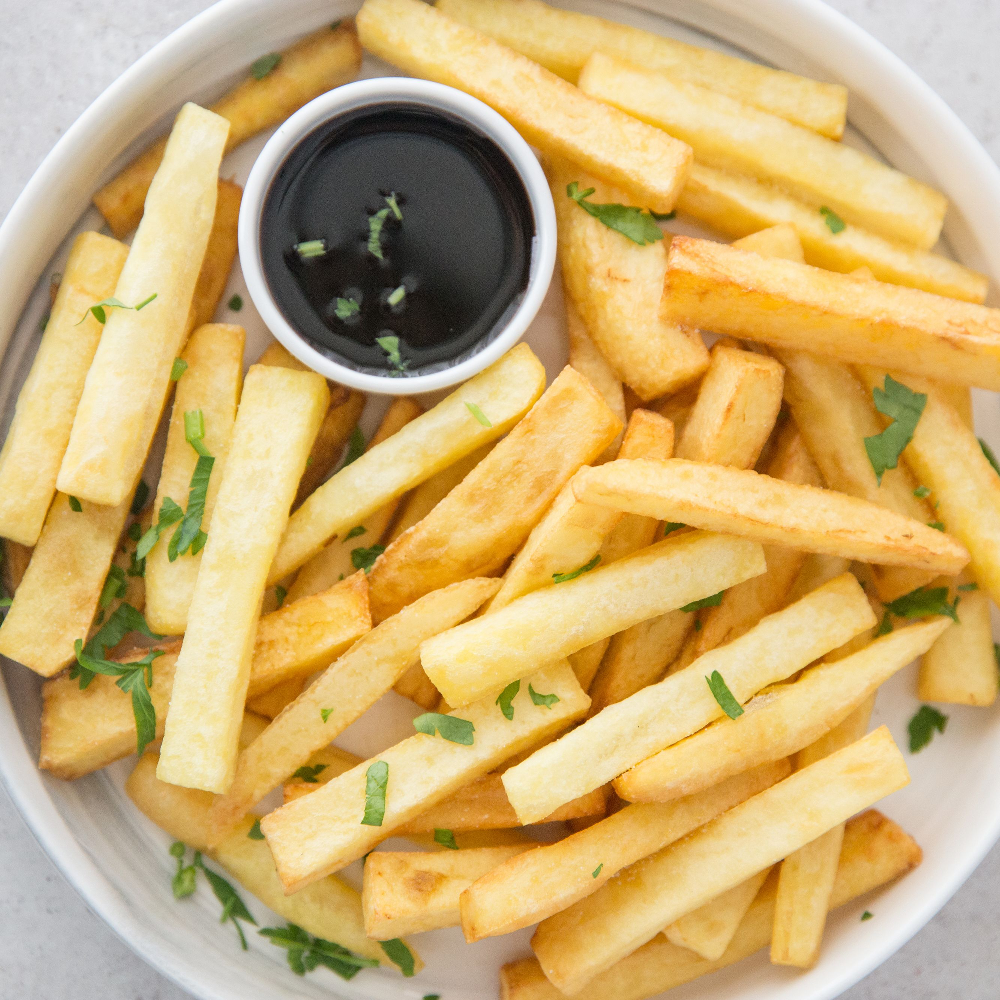

Chips

Description
Clogged arteries never tasted better!
Ingredients
- potatoes
- more potatoes
- yes, even more potatoes, trust me
- oil
- salt
- vinegar
- curry sauce
Steps
- Wash and peel the potatos. All of them. Cut them into little bars.
- Heat the oil and fry the potatoes until they are golden.
- Take the potatoes out. Sprinkle them with salt.
- Use vinegar and/or curry sauce to taste.
- Bon appetit!
- Relish that you got so many potatoes. You can eat till you burst.